The Antibody Molecule — Two Ends, Two Jobsمولکول آنتیبادی — دو سر، دو کار
One protein, built so that one end recognises and the other end acts. Get that division fixed and every later fact — why papain cuts where it does, why IgG crosses the placenta, why an idiotype varies — falls out of it rather than having to be learned separately.یک پروتئین، چنان ساخته شده که یک سرش شناسایی میکند و سر دیگرش عمل. این تقسیم را تثبیت کنید و هر واقعیت بعدی — چرا پاپائین همانجا میبُرد، چرا IgG از جفت میگذرد، چرا ایدیوتیپ متغیر است — بهجای آنکه جداگانه یاد گرفته شود، از آن بیرون میآید.
By the end of this Part you should be able toدر پایان این بخش باید بتوانید
Draw an IgG monomer and label every region on it.یک مونومر IgG بکشید و هر ناحیه را روی آن برچسب بزنید.
Say which chain, which region and which domain carries each property.بگویید هر ویژگی را کدام زنجیره، کدام ناحیه و کدام دومین حمل میکند.
Explain why the hinge is rich in proline and what that buys the molecule.توضیح دهید چرا لولا سرشار از پرولین است و این چه چیزی برای مولکول میخرد.
Predict the products of papain and pepsin digestion and say what each is used for.فرآوردههای هضم با پاپائین و پپسین را پیشبینی کنید و کاربرد هر یک را بگویید.
1.1What an Antibody Isآنتیبادی چیست
Definitionتعریف
An antibody (Ab) is a protein produced by plasma cells in response to immunisation, which binds specifically to the particular antigen that provoked it. An antibody is defined by that specific binding — it is not a shape you can recognise in isolation, but a molecule identified by what it sticks to.آنتیبادیپروتئینی است که پلاسماسلها در پاسخ به ایمنسازی میسازند و بهطور اختصاصی به همان آنتیژنی میچسبد که آن را برانگیخته است. آنتیبادی با همین اتصال اختصاصی تعریف میشود — شکلی نیست که بتوان جداگانه شناختش، بلکه مولکولی است که با آنچه به آن میچسبد شناخته میشود.
Definitionتعریف
An immunoglobulin (Ig) is a globulin that functions as an antibody, or is similar to one in chemical structure. Immunoglobulins come in two forms: secreted Ig (sIg), free in plasma and secretions, and membrane Ig (mIg), anchored in the B-cell surface where it serves as the B-cell receptor.ایمونوگلوبولینگلوبولینی است که بهعنوان آنتیبادی عمل میکند، یا از نظر ساختار شیمیایی شبیه آن است. ایمونوگلوبولینها دو شکل دارند: ایمونوگلوبولین ترشحی، آزاد در پلاسما و ترشحات، و ایمونوگلوبولین غشایی، لنگرانداخته در سطح سلول B که در آنجا گیرندهٔ سلول B است.
Exam Trap — antibody and immunoglobulin are not synonymsدام امتحانی — آنتیبادی و ایمونوگلوبولین مترادف نیستند
They are used interchangeably in speech, but the definitions differ in an examinable way. Antibody is a functional term: a molecule that binds a known antigen. Immunoglobulin is a structural term: any protein with the immunoglobulin fold and chain arrangement. Every antibody is an immunoglobulin; a myeloma protein is an immunoglobulin with no known antigen, so it is not usefully called an antibody. The membrane form (mIg) is also an immunoglobulin that is not acting as a free antibody — it is a receptor.در گفتار بهجای هم بهکار میروند، اما تعریفها بهشکلی قابلسنجش فرق دارند. آنتیبادی اصطلاحی کارکردی است: مولکولی که به آنتیژنی شناختهشده میچسبد. ایمونوگلوبولین اصطلاحی ساختاری است: هر پروتئینی با تاخوردگی و آرایش زنجیرهای ایمونوگلوبولین. هر آنتیبادی یک ایمونوگلوبولین است؛ پروتئین میلوما ایمونوگلوبولینی است بدون آنتیژن شناختهشده، پس مفید نیست که آنتیبادی نامیده شود. شکل غشایی نیز ایمونوگلوبولینی است که بهعنوان آنتیبادی آزاد عمل نمیکند — گیرنده است.
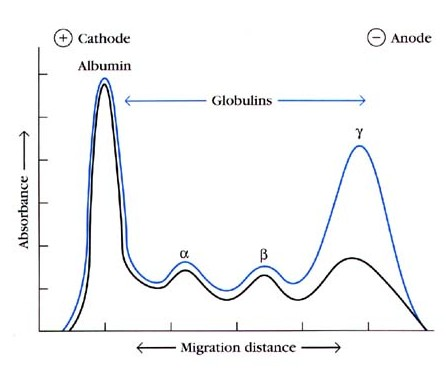
Fig 1.1 Serum protein electrophoresis. Antibodies migrate in the γ-globulin fraction — which is where the name immunoglobulin comes from, and why an increase in that peak means increased antibody.الکتروفورز پروتئین سرم. آنتیبادیها در کسر گاماگلوبولین مهاجرت میکنند — و نام ایمونوگلوبولین از همینجا میآید، و به همین دلیل افزایش آن قله یعنی افزایش آنتیبادی.
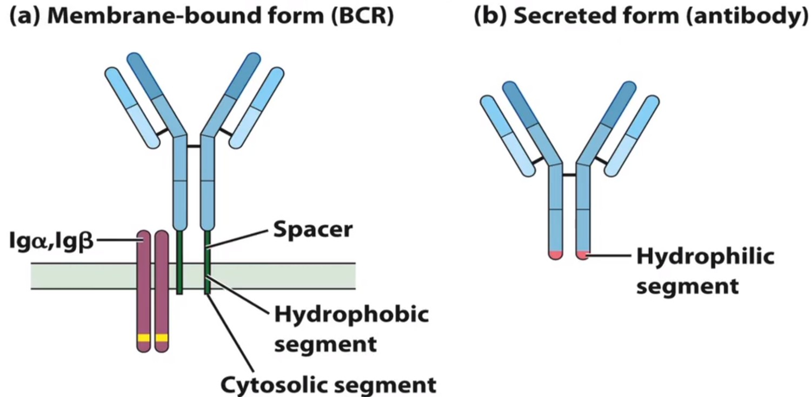
Fig 1.2 The same molecule in two forms. (a) Membrane form (BCR): a hydrophobic transmembrane segment and a short cytosolic tail, associated with Igα/Igβ for signalling. (b) Secreted form: the tail is replaced by a hydrophilic terminus and the molecule floats free.یک مولکول در دو شکل. (الف) شکل غشایی: قطعهٔ گذرنده از غشای آبگریز و دم سیتوزولی کوتاه، همراه با Igα/Igβ برای پیامرسانی. (ب) شکل ترشحی: دم جای خود را به انتهای آبدوست میدهد و مولکول آزاد شناور میشود.
Historical anchorلنگر تاریخی
Emil von Behring (1854–1917, Germany) took the first Nobel Prize in Physiology or Medicine, 1901, for the theory of antitoxin immunity — the demonstration that serum from an immunised animal could protect another animal against diphtheria toxin. That serum factor was the antibody, decades before anyone knew its structure. It is worth remembering that the very first Nobel in medicine was an immunology prize.امیل فون بهرینگ (۱۸۵۴–۱۹۱۷، آلمان) نخستین جایزهٔ نوبل پزشکی، ۱۹۰۱ را برای نظریهٔ ایمنی آنتیتوکسینی گرفت — اثبات اینکه سرم حیوان ایمنشده میتواند حیوان دیگری را در برابر سم دیفتری محافظت کند. آن عامل سرمی همان آنتیبادی بود، دههها پیش از آنکه کسی ساختارش را بداند. ارزش دارد به یاد بسپارید که نخستین نوبل پزشکی تاریخ، جایزهای ایمونولوژیک بود.
1.2Heavy and Light Chainsزنجیرههای سنگین و سبک
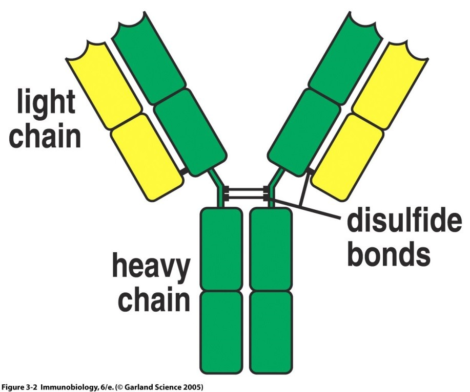
Fig 1.3 The basic unit: two identical heavy chains and two identical light chains, held together by disulfide bonds — interchain bonds between H and L and between the two H chains, plus intrachain bonds folding each domain.واحد پایه: دو زنجیرهٔ سنگین همسان و دو زنجیرهٔ سبک همسان که با پیوندهای دیسولفیدی به هم متصلاند — پیوندهای بینزنجیرهای میان سنگین و سبک و میان دو زنجیرهٔ سنگین، بهعلاوهٔ پیوندهای درونزنجیرهای که هر دومین را تا میزنند.
Two: κ (kappa) · λ (lambda), with λ1–λ4 subtypesدو تا: کاپا · لامبدا، با زیرگروههای لامبدا ۱ تا ۴
What it determinesچه چیزی را تعیین میکند
The class (isotype) of the whole antibody: μ→IgM, γ→IgG, α→IgA, ε→IgE, δ→IgD. Subclasses: IgG1–IgG4 and IgA1–IgA2کلاس (ایزوتیپ) کل آنتیبادی: مو ← IgM، گاما ← IgG، آلفا ← IgA، اپسیلون ← IgE، دلتا ← IgD. زیرکلاسها: IgG1–4 و IgA1–2
Nothing about class. Either κ or λ can pair with any heavy chain, and a given plasma cell uses one or the other, never bothهیچچیز دربارهٔ کلاس. کاپا یا لامبدا میتواند با هر زنجیرهٔ سنگینی جفت شود، و هر پلاسماسل یکی از آن دو را بهکار میبرد، هرگز هر دو را
High-Yield — the heavy chain names the antibodyنکتهٔ کلیدی — زنجیرهٔ سنگین است که نام آنتیبادی را میگذارد
Five Greek letters, five classes, in the same order: μ γ α ε δ → IgM IgG IgA IgE IgD. The light chain contributes to the binding site but contributes nothing to the class or to any effector function. If a question asks what makes IgG different from IgM, the answer is always the heavy chain — never the light chain.پنج حرف یونانی، پنج کلاس، به همان ترتیب: مو گاما آلفا اپسیلون دلتا ← IgM IgG IgA IgE IgD. زنجیرهٔ سبک در جایگاه اتصال سهم دارد اما در کلاس یا هر عملکرد اجرایی هیچ سهمی ندارد. اگر سؤالی بپرسد چه چیزی IgG را از IgM متفاوت میکند، پاسخ همیشه زنجیرهٔ سنگین است — هرگز زنجیرهٔ سبک.
1.3Variable and Constant Regionsنواحی متغیر و ثابت
Both chains are divided lengthwise into two regions. The division is the single most important structural fact in this Part:هر دو زنجیره در طول خود به دو ناحیه تقسیم میشوند. این تقسیم، مهمترین واقعیت ساختاری این بخش است:
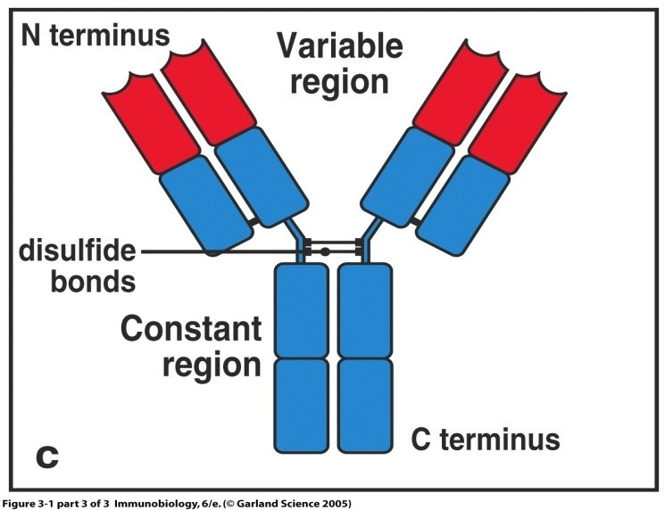
Fig 1.4N-terminus at the top, C-terminus at the bottom. The variable region is the amino-terminal end of both chains; the constant region is everything below it. Recognition is at the top; action is at the bottom.انتهای آمینی در بالا، انتهای کربوکسیلی در پایین.ناحیهٔ متغیر سر آمینی هر دو زنجیره است؛ ناحیهٔ ثابت هر چیزی زیر آن. شناسایی در بالاست؛ عمل در پایین.
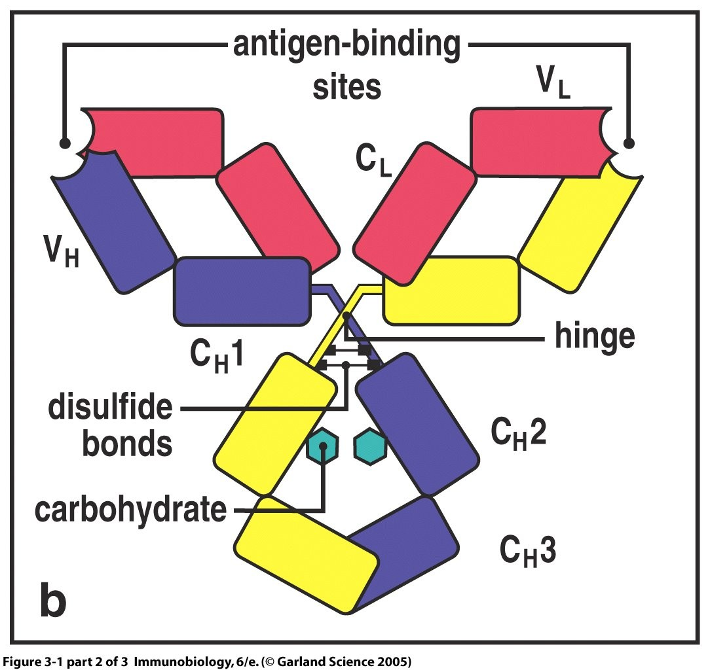
Fig 1.5 The molecule with every label. Two antigen-binding sites at the top, each made by a VH and a VL together; then CL and CH1; the hinge; then CH2 and CH3 with their carbohydrate. Memorise this one figure and Part 1 is largely done.مولکول با تمام برچسبها. دو جایگاه اتصال آنتیژن در بالا که هر یک را یک VH و یک VL با هم میسازند؛ سپس CL و CH1؛ لولا؛ سپس CH2 و CH3 با کربوهیدراتشان. همین یک شکل را حفظ کنید و بخش ۱ تقریباً تمام است.
Table 1.2 The two regions, and what each is forجدول ۱.۲ — دو ناحیه و کاربرد هر یک
Variable regionV-endناحیهٔ متغیر
Constant regionC-endناحیهٔ ثابت
Whereکجا
Amino-terminal end of both chainsسر آمینی هر دو زنجیره
Carboxy-terminal, everything below the V regionکربوکسیلی، هر چیزی زیر ناحیهٔ متغیر
Sizeاندازه
VL 110 aa · VH 110 aa — the same length in both chainsVL ۱۱۰ · VH ۱۱۰ اسید آمینه — در هر دو زنجیره هماندازه
CL 110 aa · CH 330–440 aa, made of CH1, CH2, CH3 and in IgM and IgE also CH4CL ۱۱۰ · CH ۳۳۰ تا ۴۴۰ اسید آمینه، متشکل از CH1، CH2، CH3 و در IgM و IgE نیز CH4
Varies between antibodies?میان آنتیبادیها متغیر است؟
Yes — this is the only part that doesبله — تنها بخشی که چنین است
No — identical in every antibody of the same classخیر — در هر آنتیبادی از یک کلاس، یکسان
Jobکار
Recognition — VH and VL together form one antigen-binding siteشناسایی — VH و VL با هم یک جایگاه اتصال آنتیژن میسازند
Action — complement fixation, Fc-receptor binding, placental and mucosal transport, half-lifeعمل — تثبیت کمپلمان، اتصال به گیرندهٔ Fc، عبور از جفت و مخاط، نیمهعمر
Number per moleculeتعداد در هر مولکول
Two binding sites on a monomer (one per arm)دو جایگاه اتصال در مونومر (یکی در هر بازو)
One FcیکFc
1.4CDRs and Framework RegionsCDRها و نواحی چارچوب
The variable region is not uniformly variable. Plot the variability along its 110 amino acids and you get a flat baseline interrupted by three sharp spikes. Those spikes are where the antigen is actually touched.ناحیهٔ متغیر، یکنواخت متغیر نیست. تغییرپذیری را در طول ۱۱۰ اسید آمینهاش رسم کنید و خط پایهای مسطح میبینید که سه قلهٔ تیز آن را قطع میکنند. همان قلهها جایی هستند که آنتیژن واقعاً لمس میشود.
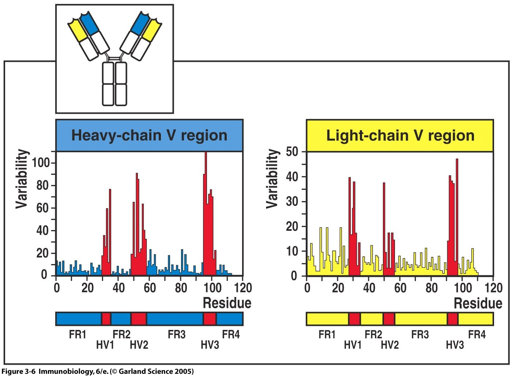
Fig 1.6 The Wu–Kabat variability plot, heavy-chain V region (left) and light-chain V region (right). Three peaks per chain. The peaks are the hypervariable regions; the flat stretches between them are the framework regions.نمودار تغییرپذیری وو–کابات، ناحیهٔ متغیر زنجیرهٔ سنگین (چپ) و سبک (راست). سه قله در هر زنجیره. قلهها نواحی فوقمتغیرند؛ بخشهای مسطح میانشان نواحی چارچوب.
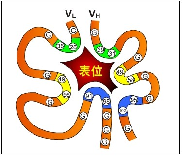
Fig 1.7 Why they are called complementarity-determining. The six loops — three from VH, three from VL — fold together into a surface whose shape is complementary to the epitope (表位). The framework holds them in place; the loops do the binding.چرا تعیینکنندهٔ مکمل بودن نامیده میشوند. شش حلقه — سه از VH و سه از VL — با هم سطحی میسازند که شکلش مکمل اپیتوپ است. چارچوب آنها را سر جا نگه میدارد؛ حلقهها اتصال را انجام میدهند.
The three short stretches of extreme sequence variability in each V regionسه بخش کوتاه با تغییرپذیری شدید توالی در هر ناحیهٔ متغیر
The sequence-level name for the same thing the structure people call a CDRنام توالیمحور همان چیزی که ساختارشناسان CDR مینامند
CDR — complementarity-determining regionناحیهٔ تعیینکنندهٔ مکمل بودن
Three per chain, so six per binding site. Present in both H and L chainsسه تا در هر زنجیره، پس شش تا در هر جایگاه اتصال. در هر دو زنجیرهٔ سنگین و سبک
Physically contacts the antigen. Their combined shape is what gives an antibody its specificityآنتیژن را فیزیکی لمس میکنند. شکل مجموعشان همان چیزی است که اختصاصیت آنتیبادی را میدهد
FR — framework regionناحیهٔ چارچوب
The relatively conserved stretches between the CDRsبخشهای نسبتاً حفظشدهٔ میانCDRها
Forms the β-sheet scaffold that holds the CDR loops in the right position. It does not touch antigenداربست ورقهٔ بتا را میسازد که حلقههای CDR را در موقعیت درست نگه میدارد. آنتیژن را لمس نمیکند
Idiotypeایدیوتیپ
The set of antigenic determinants of the V region — essentially, the CDRs seen as an antigen themselvesمجموعهٔ تعیینکنندههای آنتیژنی ناحیهٔ متغیر — در واقع خودِ CDRها که بهچشم آنتیژن دیده شوند
Unique to one clone. It is why an antibody can itself be recognised by another antibody — see §2.3منحصر به یک کلون. به همین دلیل یک آنتیبادی میتواند خود توسط آنتیبادی دیگری شناسایی شود — بخش ۲.۳
High-Yield — the arithmetic of the binding siteنکتهٔ کلیدی — حساب جایگاه اتصال
3 CDRs per chain × 2 chains = 6 CDRs per antigen-binding site. 2 binding sites per monomer. The binding site is formed by VH and VL together — neither chain alone can bind antigen, which is why a free light chain (Bence Jones protein) has no antibody activity.۳ CDR در هر زنجیره × ۲ زنجیره = ۶ CDR در هر جایگاه اتصال. ۲ جایگاه اتصال در هر مونومر. جایگاه اتصال را VH و VL با هم میسازند — هیچیک بهتنهایی نمیتواند آنتیژن را ببندد، و به همین دلیل زنجیرهٔ سبک آزاد (پروتئین بنسجونز) فعالیت آنتیبادی ندارد.
1.5The Hinge and the Domainلولا و دومین
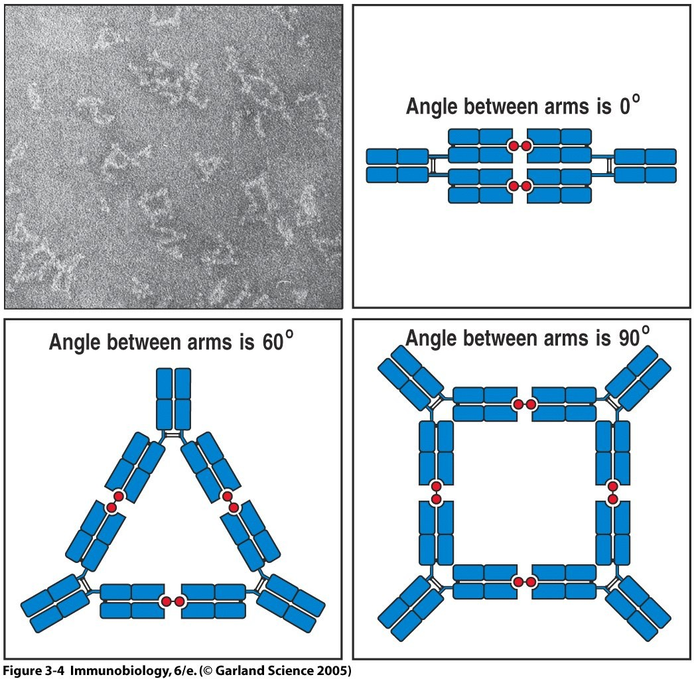
Fig 1.8 What flexibility buys. Top: electron micrographs of antibody–antigen complexes. Middle: the angle between the arms can be 0°, 60° or 180°. Bottom: because the arms can swing, antibodies and multivalent antigens build triangular, square and larger lattices — which is precipitation, agglutination, and the immune complex all at once.انعطافپذیری چه میخرد. بالا: تصاویر میکروسکوپ الکترونی کمپلکس آنتیژن–آنتیبادی. میانه: زاویهٔ میان دو بازو میتواند صفر، ۶۰ یا ۱۸۰ درجه باشد. پایین: چون بازوها میچرخند، آنتیبادیها و آنتیژنهای چندظرفیتی شبکههای مثلثی، مربعی و بزرگتر میسازند — که یکجا یعنی رسوب، آگلوتیناسیون و کمپلکس ایمنی.
Region · C-endThe hinge regionناحیهٔ لولا
What it isچیست
A short stretch between CH1 and CH2.بخش کوتاهی میان CH1 و CH2.
Rich in proline residues — and in cysteine, which forms the inter-heavy-chain disulfide bonds.سرشار از پرولین — و سیستئین که پیوندهای دیسولفیدی میان دو زنجیرهٔ سنگین را میسازد.
Absent in IgM and IgE, which instead have an extra domain (CH4) in its place.در IgM و IgE وجود ندارد؛ بهجایش دومین اضافی (CH4) دارند.
What it doesچه میکند
Flexibility.Proline cannot form a regular α-helix or β-sheet — its ring locks the backbone angle and breaks secondary structure. A proline-rich stretch is therefore necessarily extended and floppy, and that floppiness lets the two Fab arms swing independently. Two consequences follow. First, one antibody can bridge two epitopes that are different distances apart, which no rigid molecule could do. Second, the hinge is the most exposed part of the molecule and therefore the site most accessible to proteases — which is exactly why papain and pepsin cut there (§1.7).انعطافپذیری.پرولین نمیتواند مارپیچ آلفا یا ورقهٔ بتای منظم بسازد — حلقهاش زاویهٔ اسکلت را قفل میکند و ساختار دوم را میشکند. پس بخش سرشار از پرولین ناگزیر کشیده و شل است و همین شلی به دو بازوی Fab اجازه میدهد مستقل بچرخند. دو پیامد دارد. نخست، یک آنتیبادی میتواند دو اپیتوپ با فاصلههای متفاوت را پل بزند، کاری که هیچ مولکول صلبی نمیتواند. دوم، لولا در معرضترین بخش مولکول است و بنابراین دسترسپذیرترین جایگاه برای پروتئازها — و دقیقاً به همین دلیل پاپائین و پپسین همانجا میبرند (بخش ۱.۷).
The domain — the repeating unitدومین — واحد تکرارشونده
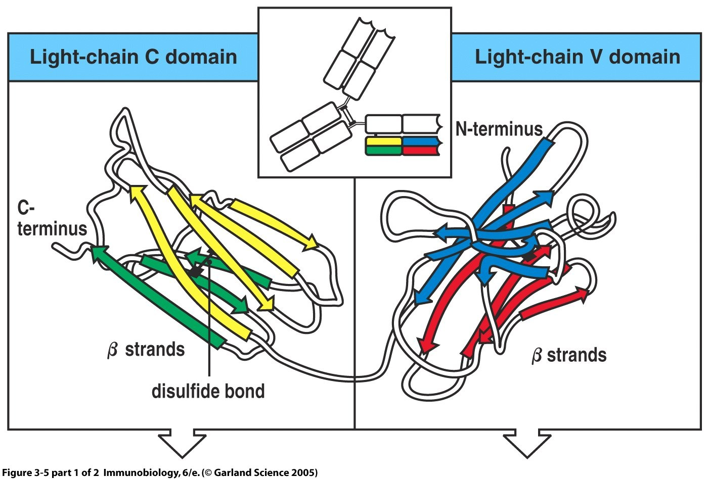
Fig 1.9 A single domain: about 110 amino acids folded into two β-sheets facing each other, clamped by an intrachain disulfide bond. The whole antibody is built from this unit repeated — VL, CL, VH, CH1, CH2, CH3.یک دومین: حدود ۱۱۰ اسید آمینه که بهصورت دو ورقهٔ بتای روبهروی هم تا خورده و با پیوند دیسولفیدی درونزنجیرهای بسته شده. کل آنتیبادی از تکرار همین واحد ساخته شده است.
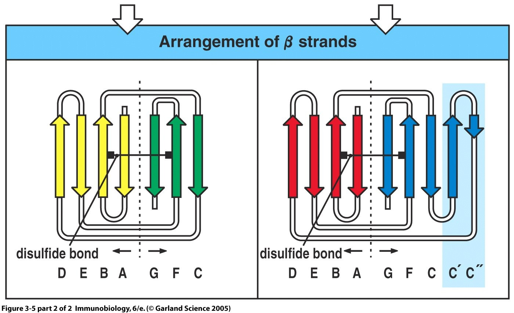
Fig 1.10 The β-strand arrangement differs slightly between the C domain (left, seven strands) and the V domain (right, nine strands). The two extra strands in the V domain are what carry the CDR loops.آرایش رشتههای بتا میان دومین ثابت (چپ، هفت رشته) و دومین متغیر (راست، نُه رشته) اندکی فرق دارد. دو رشتهٔ اضافی در دومین متغیر، همانهاییاند که حلقههای CDR را حمل میکنند.
High-Yield — the immunoglobulin superfamilyنکتهٔ کلیدی — ابرخانوادهٔ ایمونوگلوبولین
The Ig domain is such a useful shape that evolution reused it everywhere. Any protein built from it belongs to the immunoglobulin superfamily: the T-cell receptor, MHC class I and II, CD4 and CD8, CD3, Igα/Igβ, many adhesion molecules, and the poly-Ig receptor that transports IgA. When you meet a new immune molecule described as having “Ig-like domains”, this is what it means — and it means the molecule almost certainly works by specific binding at the domain tip.دومین ایمونوگلوبولین چنان شکل مفیدی است که تکامل همهجا از آن دوباره استفاده کرده. هر پروتئینی که از آن ساخته شده به ابرخانوادهٔ ایمونوگلوبولین تعلق دارد: گیرندهٔ سلول T، MHC کلاس ۱ و ۲، CD4 و CD8، CD3، Igα/Igβ، بسیاری از مولکولهای چسبندگی، و گیرندهٔ پلیایمونوگلوبولین که IgA را منتقل میکند. وقتی مولکول ایمنی تازهای میبینید که «دومینهای شبهایمونوگلوبولین» دارد، معنایش همین است — و یعنی آن مولکول تقریباً بهیقین با اتصال اختصاصی در نوک دومین کار میکند.
1.6J Chain and Secretory Pieceزنجیرهٔ J و قطعهٔ ترشحی
Two classes are not monomers. IgM circulates as a pentamer and secreted IgA as a dimer — and each needs an extra polypeptide that is not part of the basic four-chain unit.دو کلاس، مونومر نیستند. IgM بهصورت پنتامر در گردش است و IgAی ترشحی بهصورت دیمر — و هر یک به پلیپپتیدی اضافی نیاز دارد که جزء واحد پایهٔ چهارزنجیرهای نیست.
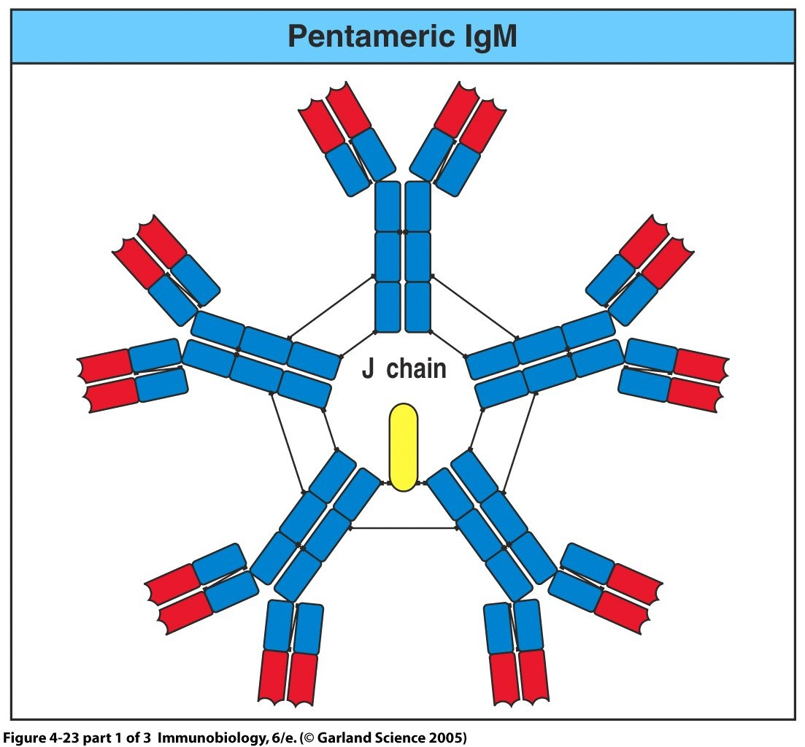
Fig 1.11Pentameric IgM. Five monomers arranged in a star, joined at their Fc ends, with a single J chain at the centre. Ten binding sites in principle — though steric hindrance means only about five are usable at once against a large antigen.IgM پنتامری. پنج مونومر بهشکل ستاره، متصل در سرهای Fc، با یک زنجیرهٔ J در مرکز. در اصل ده جایگاه اتصال — هرچند ممانعت فضایی سبب میشود در برابر آنتیژن بزرگ تنها حدود پنجتا همزمان قابلاستفاده باشند.
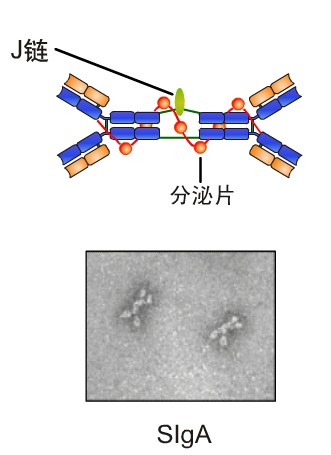
Fig 1.12Secretory IgA (SIgA). Two monomers joined by a J chain (J链), plus the secretory piece (分泌片) wrapped around the whole dimer. The electron micrograph below shows the real molecule.IgA ترشحی. دو مونومر متصل با زنجیرهٔ J، بهعلاوهٔ قطعهٔ ترشحی که گرداگرد تمام دیمر پیچیده است. تصویر میکروسکوپ الکترونی در پایین، مولکول واقعی را نشان میدهد.
Table 1.4 Two extra polypeptidesجدول ۱.۴ — دو پلیپپتید اضافی
J chain (joining chain)زنجیرهٔ J
Secretory piece (SP)قطعهٔ ترشحی
What it isچیست
A single small polypeptide chainیک زنجیرهٔ پلیپپتیدی کوچک منفرد
A fragment of the poly-Ig receptor — a piece of the epithelial cell’s own transport proteinقطعهای از گیرندهٔ پلیایمونوگلوبولین — تکهای از پروتئین انتقالی خود سلول اپیتلیال
Made byساختهٔ
The plasma cell, along with the antibodyپلاسماسل، همراه با آنتیبادی
The epithelial cell, not the plasma cellسلول اپیتلیال، نه پلاسماسل
What it doesچه میکند
Joins the monomer into a polymer — pentameric IgM and dimeric IgAمونومر را به پلیمر میپیوندد — IgM پنتامری و IgA دیمری
Carries IgA across the epithelium into the secretion, then stays attached and protects it from proteases in the gut and airway lumenIgA را از میان اپیتلیوم به درون ترشح میبرد، سپس متصل میماند و آن را در برابر پروتئازهای مجرای روده و راه هوایی محافظت میکند
Found inدر کجا
IgM and IgA onlyفقط IgM و IgA
Secretory IgA only — serum IgA is a monomer without itفقط IgA ترشحی — IgAی سرم مونومر است و آن را ندارد
High-Yield — the secretory piece is not made by the B cellنکتهٔ کلیدی — قطعهٔ ترشحی را سلول B نمیسازد
This is asked directly and caught often. The J chain comes from the plasma cell; the secretory piece comes from the epithelial cell the antibody passes through. It is the leftover extracellular portion of the poly-Ig receptor, cleaved off and carried along. That is why secretory IgA survives in the gut lumen while serum IgA would be digested — it is wearing a piece of the epithelium as armour.این مستقیماً پرسیده میشود و اغلب کسی را میگیرد. زنجیرهٔ J از پلاسماسل میآید؛ قطعهٔ ترشحی از سلول اپیتلیالی که آنتیبادی از آن میگذرد. باقیماندهٔ بخش خارجسلولی گیرندهٔ پلیایمونوگلوبولین است که جدا شده و همراه آمده. به همین دلیل IgA ترشحی در مجرای روده زنده میماند در حالیکه IgA سرمی هضم میشد — تکهای از اپیتلیوم را بهعنوان زره پوشیده است.
1.7Cutting It Up — the Fragmentsبریدن آن — قطعات
Porter and Edelman took the 1972 Nobel Prize for working out the structure, and the method was simple: cut the molecule with an enzyme and see what the pieces can still do. The result is the vocabulary everyone still uses.پورتر و ادلمن جایزهٔ نوبل ۱۹۷۲ را برای کشف ساختار گرفتند، و روش ساده بود: مولکول را با آنزیم ببُر و ببین قطعات هنوز چه میتوانند بکنند. نتیجه، همان واژگانی است که هنوز همه بهکار میبرند.
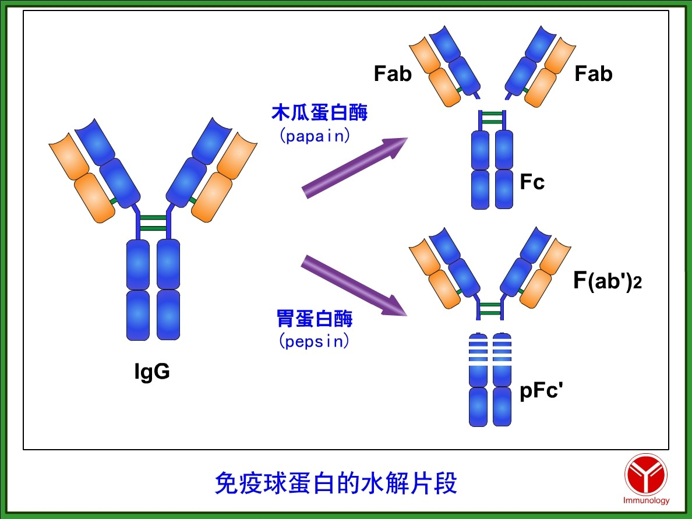
Fig 1.13 Where each enzyme cuts. Papain (木瓜蛋白酶) cuts above the inter-heavy-chain disulfide bonds, giving two separate Fab and one Fc. Pepsin (胃蛋白酶) cuts below them, so the two arms stay joined as F(ab′)₂ while the Fc is chopped into useless pFc′ fragments.هر آنزیم کجا میبُرد. پاپائینبالای پیوندهای دیسولفیدی میان دو زنجیرهٔ سنگین میبُرد و دو Fab جدا و یک Fc میدهد. پپسینزیر آنها میبُرد، پس دو بازو بهصورت F(ab′)₂ به هم متصل میمانند در حالیکه Fc به قطعات بیمصرف pFc′ خرد میشود.
Table 1.5 The fragments and what each keepsجدول ۱.۵ — قطعات و آنچه هر یک حفظ میکند
Fragmentقطعه
Made byحاصل از
What it containsشامل چیست
Can it still bind antigen? Can it still act?هنوز آنتیژن میبندد؟ هنوز عمل میکند؟
FabV-endFab
Papainپاپائین
VL + CL + VH + CH1 — one armVL + CL + VH + CH1 — یک بازو
Binds, monovalently. One binding site, so it attaches but cannot cross-link or precipitate. No effector functionمیبندد، تکظرفیتی. یک جایگاه اتصال دارد، پس میچسبد اما نمیتواند اتصال عرضی یا رسوب بدهد. بدون عملکرد اجرایی
FcC-endFc
Papainپاپائین
CH2 + CH3 of both heavy chains, with the carbohydrateCH2 + CH3 هر دو زنجیرهٔ سنگین، با کربوهیدرات
Cannot bind antigen at all. Carries every effector function — it crystallises readily, which is where the “c” comes fromاصلاً آنتیژن نمیبندد.تمام عملکردهای اجرایی را حمل میکند — بهراحتی بلور میشود و «c» از همینجاست
F(ab′)₂V-endF(ab′)₂
Pepsinپپسین
Both arms, still joined at the hingeهر دو بازو، هنوز متصل در لولا
Binds bivalently — it can cross-link, agglutinate and precipitate exactly like whole antibody. But no Fc, so no complement fixation and no Fc-receptor bindingدوظرفیتی میبندد — دقیقاً مانند آنتیبادی کامل میتواند اتصال عرضی، آگلوتیناسیون و رسوب بدهد. اما Fc ندارد، پس نه تثبیت کمپلمان و نه اتصال به گیرندهٔ Fc
pFc′pFc′
Pepsinپپسین
Fragments of CH3قطعاتی از CH3
Neither. A degradation product with no activityهیچکدام. فرآوردهای تخریبی و بدون فعالیت
Clinical Correlation — why F(ab′)₂ is a therapeutic productارتباط بالینی — چرا F(ab′)₂ یک فرآوردهٔ درمانی است
Antivenoms and some antitoxins are supplied as F(ab′)₂ rather than whole IgG, and the reason is exactly the table above. You want the binding — bivalent, so it neutralises and clears the toxin efficiently. You do not want the Fc, because the Fc of a horse antibody injected into a human is a foreign protein that Fc receptors will grab and complement will fix, which is how serum sickness and anaphylaxis happen. Cut the Fc off with pepsin and you keep the therapy and lose the reaction.پادزهرها و برخی آنتیتوکسینها بهصورت F(ab′)₂ عرضه میشوند نه IgG کامل، و دلیلش دقیقاً همان جدول بالاست. اتصال را میخواهید — دوظرفیتی، تا سم را کارآمد خنثی و پاکسازی کند. اما Fc را نمیخواهید، چون Fc آنتیبادی اسب که به انسان تزریق شود پروتئینی بیگانه است که گیرندههای Fc میگیرندش و کمپلمان رویش تثبیت میشود — و بیماری سرم و آنافیلاکسی اینگونه رخ میدهد. Fc را با پپسین ببُرید، درمان را نگه میدارید و واکنش را از دست میدهید.
High-Yield — remember it by where the cut fallsنکتهٔ کلیدی — با محل برش به یادش بسپارید
Both enzymes cut at the hinge, because the hinge is the exposed, floppy part. The only question is which side of the inter-chain disulfide bonds. Papain cuts above → the arms come apart → 2 Fab + 1 Fc. Pepsin cuts below → the arms stay together → 1 F(ab′)₂ + pFc′ debris. “Papain gives pieces; pepsin gives a pair.”هر دو آنزیم در لولا میبرند، چون لولا بخش در معرض و شل است. تنها پرسش این است که کدام سمت پیوندهای دیسولفیدی بینزنجیرهای. پاپائین بالا میبُرد ← بازوها جدا میشوند ← ۲ Fab + ۱ Fc. پپسین پایین میبُرد ← بازوها با هم میمانند ← ۱ F(ab′)₂ + خردههای pFc′.